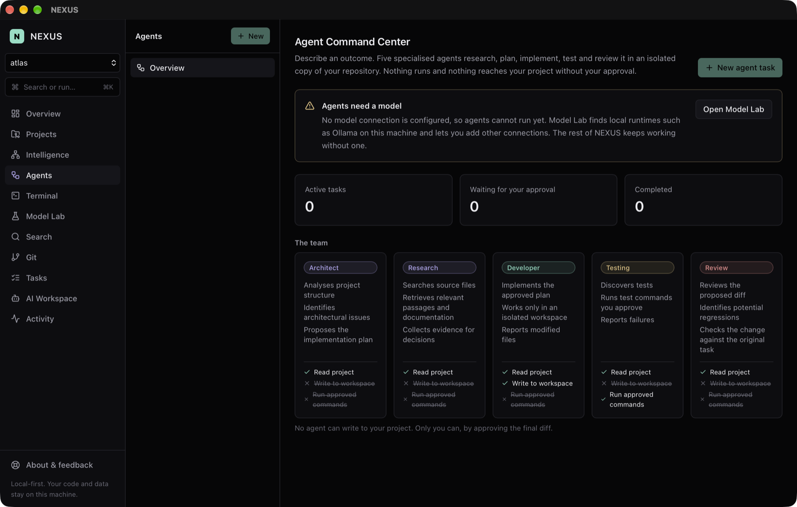

Understand a codebase on your own machine. Change it only through you.
NEXUS is a desktop app that maps any local project without AI — its modules, dependency cycles and hotspots — and lets AI agents propose changes in an isolated copy that reach your files only after you approve the diff.
No account, no telemetry, no AI key needed. Works with Ollama and other local models.
The current download is {{VERSION}}. The codebase report, guided setup, sandboxed execution and the interface shown here are in the source and ship in the next release; you can build it from source today.

A quick tour
Welcome → a project overview → the architecture map → the codebase report → a Git diff → a task waiting for approval → execution settings → agents.

What it does
Two halves: understand the code yourself, then let AI change it through you.
Understand any codebase — no AI, no key
Point NEXUS at a folder. It analyses languages, frameworks, dependencies and findings, and indexes symbols and imports for Rust, TypeScript, JavaScript, Python and Go. Then: a map of modules and imports with dependency cycles marked, the most-imported files, symbol and reference search, and search across all your projects.

Share the shape of a project, not its code
One click saves a self-contained HTML report: totals, languages, the module graph and cycles, where to start reading, hotspots, external and declared dependencies, findings and Git facts. It contains file paths and names, and no source code. It runs no scripts and loads nothing.
Open a real report (NEXUS's own).

Agents that ask first
Describe an outcome. A research step and an architect step read the code and propose a plan; you approve it. A developer writes the change in a separate Git worktree, never in your project. Each test command waits for your approval. A review step reads the diff. You approve the final diff, applied all-or-nothing. Credentials in files the agent edits are sent to the model as placeholders.

Commands that say how they run
Every command — in a task or from an agent — waits for approval and shows its level: Trusted (as you, not sandboxed), Restricted (macOS sandbox or bubblewrap: writes only to the project, temp and caches; credential folders, NEXUS's data and the keychain hidden) or Isolated (no network). Levels a system cannot enforce are refused, never quietly downgraded. Time limits stop the whole process tree.

Git and a real terminal, next to it all
Changes, diffs, staging and committing with ⌘Enter; history and branches; merge and conflict state. Your own shell in tabs and splits that survive a restart. NEXUS never pushes, pulls or switches branches for you.

Your models, measured on your hardware
Connect Ollama, llama.cpp, LM Studio or any OpenAI-compatible server, or Anthropic and OpenAI. Model Lab detects and starts local runtimes bound to this computer, streams prompts, and benchmarks models side by side. Keys live in your system's keychain.

Privacy and security
NEXUS runs your commands and reads your code, so it is built to be checked, not trusted on faith.
Nothing leaves by itself
No account, telemetry, analytics or update check. Code goes to a model only when you ask, and to a model off your computer only after you confirm it for that request.
Approval is not called a sandbox
Every command waits for approval and states its level. Restricted and Isolated are enforced by the macOS sandbox or bubblewrap; Windows currently runs commands as you (Trusted only), and the app says so.
Keys stay in your keychain
API keys live in the macOS Keychain, Windows Credential Manager or Linux Secret Service, are never sent along a redirect, and are removed from errors. Credentials in code sent to a model are masked or replaced with placeholders.
What can leave your machine · Threat model and audits · Report a vulnerability
Why NEXUS
Most AI coding tools start with the agent. NEXUS starts with understanding, and puts every change behind your approval. It is not an editor — use it next to yours.
| If you want… | Probably use |
|---|---|
| The most capable agent in your terminal | Claude Code |
| An AI-first editor with completions | Cursor, Windsurf, VS Code with Copilot, Zed |
| A terminal pair programmer that commits each change | Aider |
| To understand a codebase locally, share its shape without the code, and run AI changes as reviewable proposals with local models | NEXUS |
Where NEXUS is weaker, with sources: the full comparison.
Get started in five minutes
- Download the installer for your system from Releases and check it against
SHA256SUMS.txt. The beta is unsigned: on macOS open it once, then System Settings → Privacy & Security → Open Anyway; on Windows More info → Run anyway. - Choose a folder with code in it. NEXUS analyses and indexes it in seconds and never changes your files.
- Open the map (Intelligence) or share a report (Overview).
- Optional: connect a model. If Ollama is installed, the first-run guide can start and connect it.
| System | Download | Status |
|---|---|---|
| macOS, Apple Silicon | .dmg (aarch64) | Used daily |
| macOS, Intel | .dmg (x64) | Built and launch-checked under Rosetta |
| Windows 10/11 x64 | -setup.exe or .msi | Built, installed and launch-checked in CI; little hands-on use |
| Linux x64 | .deb, .rpm, .AppImage | Built, installed and launch-checked in CI; little hands-on use |
Step-by-step: getting started · installation · troubleshooting
Open source
MIT-licensed and built in the open by a student developer. Help is especially welcome with:
- trying NEXUS on Windows and Linux and reporting what breaks;
- teaching the code index another language (Java, C#, Kotlin, Swift, C/C++);
- documentation where the docs and the app disagree.
How to contributeGood first issues
Tell us what happened
Feedback goes into public GitHub issues — no forms elsewhere and no tracking. Each one asks only what is needed.
- It did not install or start
- It works (or not) on my system — especially Windows and Linux
- Something is broken
- Something was confusing
- I need something it does not do
Roadmap
Now
Release 0.2.0: the codebase report, guided first run, sandboxed execution levels and the new interface, verified on every system.
Next
A Windows sandbox backend, signed installers, incremental indexing, better agents with local models, comparing two reports.
Not planned
An editor, accounts, telemetry, or a bundled hosted model.
FAQ
Do I need an AI key or a model?
No. The map, symbols, search, the codebase report, Git, the terminal and tasks work without one. Questions about the code and agents need a model; a local one (Ollama, llama.cpp, LM Studio) needs no key.
Does my code leave my computer?
Only when you send something to a model that is not on your computer, and NEXUS asks you to confirm that for each request. There is no account, telemetry, analytics or update check. Privacy details.
Can an agent damage my project?
The agent writes only in a separate Git worktree. Your project changes only when you approve the final diff, applied all-or-nothing. Test commands each need approval and can run sandboxed on macOS and Linux.
Is it an editor? Does it replace Cursor or Claude Code?
No. Use NEXUS next to your editor to understand a project, review changes and run controlled AI work.
Which languages does the code index understand?
Rust, TypeScript, JavaScript, Python and Go. Other languages still appear in analysis and search.
Why are the installers unsigned?
Signing needs paid certificates; it is on the roadmap. Each release includes SHA-256 checksums.
What are the system requirements?
macOS 12+, Windows 10 (1809+) or 11 x64 with WebView2, or Linux x64 with glibc 2.35+ and WebKitGTK 4.1. About 200 MB of disk. Git for Git features and agents.